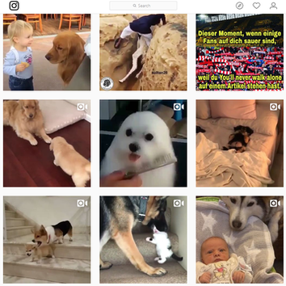

Models Of Good Practice
My main inspiration was from Instagram with a simple design with a navigation bar at the top. The grid layout is easy to read and follow. I tried to keep it all relatively simple, going for a table to contain important information making it easy to read. I went for a minimalistic style to not overwhelm people who view the site, and to make it clear as to the information I am trying to get across. The navigation bar uses abbreviations to make it fit better on mobile devices, as there would not be as much space as with a computer screen. The table idea was originally for the Glossary page, as it was a clear way to present the information and link the terms to their definitions with ease, but was adapted for the Comparison page as the layout would work for a side by side view of the jobs.

I also looked at other sites, such as Twitch and found a similar design to that of Instagram. Twitch’s “Theatre mode” was an inspiration for my decision to use a black background as it focuses your attention on the content in front of you and is also easier on the viewers eyes when viewed for long periods of time.
Looking at the Net Awards page, a simplistic design, lots of white space, and images towards the top of the page to grab a persons attention.
The Awwwards page follows a similar design to the Net awards page. With this in mind keeping things plain, an easy to read font was a good method to stick to. Presenting information in the center of the page as well, enables the use of white space towards the borders.
Site inspire's page presents its information in blocks while sticking to a similar design to the previous ones. With the slideshow of pictures/links at the top of the page to try to keep the attention of the viewer focused on this part in order to tempt them to click on one of the images that catches their eye.